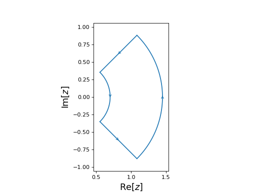

Contours¶
The cxroots module allows the user to specify four different types of contours which are all subclasses of Contour:
-
class
cxroots.Contour.Contour(segments)[source]¶ A base class for contours in the complex plane.
-
centralPoint¶ The point at the center of the contour.
- Type
complex
-
area¶ The surface area of the contour.
- Type
float
-
__call__(t)[source]¶ The point on the contour corresponding the value of the parameter t.
- Parameters
t (float) – A real number \(0\leq t \leq 1\) which parameterises the contour.
- Returns
A point on the contour.
- Return type
complex
Example
>>> from cxroots.Paths import Circle >>> c = Circle(0,1) # Circle |z|=1 parameterised by e^{it} >>> c(0.25) (6.123233995736766e-17+1j) >>> c(0) == c(1) True
-
contains(z)[source]¶ Tests whether the point z is within the contour.
- Parameters
z (complex) –
- Returns
True if z lies within the contour and false otherwise.
- Return type
bool
-
distance(z)[source]¶ Get the distance from the point z in the complex plane to the nearest point on the contour.
- Parameters
z (complex) – The point from which to measure the distance to the closest point on the contour to z.
- Returns
The distance from z to the point on the contour which is closest to z.
- Return type
float
-
integrate(f, **integrationKwargs)¶ Integrate the function f along the path. The value of the integral is cached and will be reused if the method is called with same arguments (ignoring verbose).
- Parameters
f (function) – A function of a single complex variable.
absTol (float, optional) – The absolute tolerance for the integration.
relTol (float, optional) – The realative tolerance for the integration.
divMax (int, optional) – If the Romberg integration method is used then divMax is the maximum number of divisions before the Romberg integration routine of a path exits.
intMethod ({'quad', 'romb'}, optional) – If ‘quad’ then
scipy.integrate.quad()is used to compute the integral. If ‘romb’ then Romberg integraion, usingscipy.integrate.romberg(), is used instead.verbose (bool, optional) – Passed ass the show argument of
scipy.integrate.romberg().
- Returns
The integral of the function f along the path.
- Return type
complex
Notes
This function is only used when checking the multiplicity of roots. The bulk of the integration for rootfinding is done with
cxroots.CountRoots.prod().
-
plot(*args, **kwargs)¶ Uses matplotlib to plot, but not show, the path as a 2D plot in the Complex plane.
- Parameters
N (int, optional) – The number of points to use when plotting the path.
linecolor (optional) – The colour of the plotted path, passed to the
matplotlib.pyplot.plot()function as the keyword argument of ‘color’. See the matplotlib tutorial on specifying colours.linestyle (str, optional) – The line style of the plotted path, passed to the
matplotlib.pyplot.plot()function as the keyword argument of ‘linestyle’. The default corresponds to a solid line. Seematplotlib.lines.Line2D.set_linestyle()for other acceptable arguments.
-
show(saveFile=None, **plotKwargs)[source]¶ Shows the contour as a 2D plot in the complex plane. Requires Matplotlib.
- Parameters
saveFile (str (optional)) – If given then the plot will be saved to disk with name ‘saveFile’. If saveFile=None the plot is shown on-screen.
**plotKwargs – Key word arguments are as in
plot().
-
subdivisions(axis='alternating')[source]¶ A generator for possible subdivisions of the contour.
- Parameters
axis (str, 'alternating' or any element of self.axisName.) – The axis along which the line subdividing the contour is a constant (eg. subdividing a circle along the radial axis will give an outer annulus and an inner circle). If alternating then the dividing axis will always be different to the dividing axis used to create the contour which is now being divided.
- Yields
tuple – A tuple with two contours which subdivide the original contour.
-
Circle¶
-
class
cxroots.Circle(center, radius)[source]¶ A positively oriented circle in the complex plane.
- Parameters
center (complex) – The center of the circle.
radius (float) – The radius of the circle.
Examples
from cxroots import Circle circle = Circle(center=1, radius=0.5) circle.show()
(Source code, png, hires.png, pdf)

{kind=link}
{kind=link}
Rectangle¶
-
class
cxroots.Rectangle(xRange, yRange)[source]¶ A positively oriented rectangle in the complex plane.
- Parameters
xRange (tuple) – Tuple of length two giving the range of the rectangle along the real axis.
yRange (tuple) – Tuple of length two giving the range of the rectangle along the imaginary axis.
Examples
from cxroots import Rectangle rect = Rectangle(xRange=(-2, 2), yRange=(-1, 1)) rect.show()
(Source code, png, hires.png, pdf)

{kind=link}
{kind=link}
Annulus¶
-
class
cxroots.Annulus(center, radii)[source]¶ An annulus in the complex plane with the outer circle positively oriented and the inner circle negatively oriented.
- Parameters
center (complex) – The center of the annulus in the complex plane.
radii (tuple) – A tuple of length two of the form (inner_radius, outer_radius).
Examples
from cxroots import Annulus annulus = Annulus(center=0, radii=(0.5,0.75)) annulus.show()
(Source code, png, hires.png, pdf)

{kind=link}
{kind=link}
Annulus Sector¶
-
class
cxroots.AnnulusSector(center, radii, phiRange)[source]¶ A sector of an annulus in the complex plane.
- Parameters
center (complex) – The center of the annulus sector.
radii (tuple) – Tuple of length two of the form (inner_radius, outer_radius)
phiRange (tuple) – Tuple of length two of the form (phi0, phi1). The segment of the contour containing inner and outer circular arcs will be joined, counter clockwise from phi0 to phi1.
Examples
from numpy import pi from cxroots import AnnulusSector annulusSector = AnnulusSector(center=0.2, radii=(0.5, 1.25), phiRange=(-pi/4, pi/4)) annulusSector.show()
(Source code, png, hires.png, pdf)
from numpy import pi from cxroots import AnnulusSector annulusSector = AnnulusSector(center=0.2, radii=(0.5, 1.25), phiRange=(pi/4, -pi/4)) annulusSector.show()
(Source code, png, hires.png, pdf)

{kind=link}
{kind=link}
{kind=link}
{kind=link}